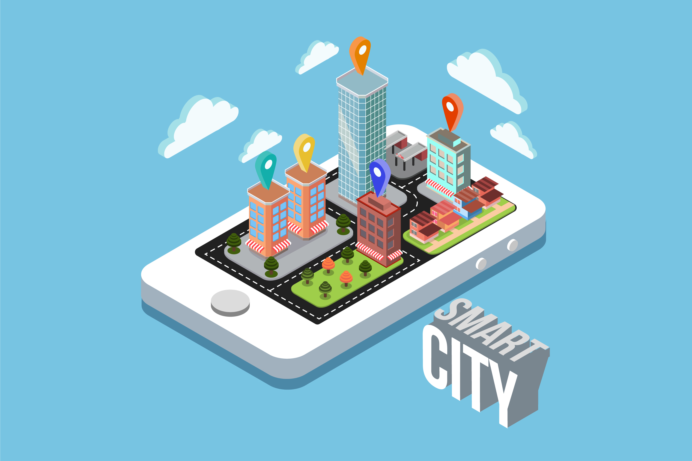

What is Smart City?
Literally, smart city can be interpreted as "smart city". Smart city is a smart city concept designed to help various community activities, especially in an effort to efficiently manage resources, and to provide easy access to information to the public, to anticipate unforeseen events.
Quoted from smartcityindonesia.org page, a city is said to be Smart if the city can really know the state of the city in it, understand the problem in more depth, to be able to take action on the problem.
While in the book Introduction and Development of Smart City, smart city is defined as a concept of development and management of the city with the use of Information and Communication Technology (ICT) to connect, monitor and control various resources in the city more effectively and efficiently to maximize service to its citizens and support sustainable development
Based on these definitions, there are several things we can underline related to smart city.
- First, that is a concept applied by the system of local government in managing urban society.
- Second, requires effective and efficient management of the region against all resources.
- Third, smart city is expected to be able to run the information provider function appropriately to the public and able to anticipate unexpected events.
Smart city. When we say a city is an intelligent city, it is actually a personification master who employs a city like a human being as if the city can feel, think and act on the internal and external conditions of the city.
The main aspect of Smart City
In 2014, Frost & Sullivan identifies eight key aspects of smart city administration, smart governance, smart infrastructure, smart technology, smart mobility, smart healthcare, smart energy, smart building and smart citizens.
Smart City Destination
The main objective of smart city is to establish a safe and comfortable city for citizens and to strengthen the city's competitiveness in economy. So it can be explained that the purpose of the implementation of smart city can be divided into 3 main agenda, namely to support the city in the social dimension (security), economy (competitiveness) and environment (comfort).
Or more commonly quoted from the United Nation page, it can be said that the purpose of smart city is to form a city Sustainable (economic, social, environmental).